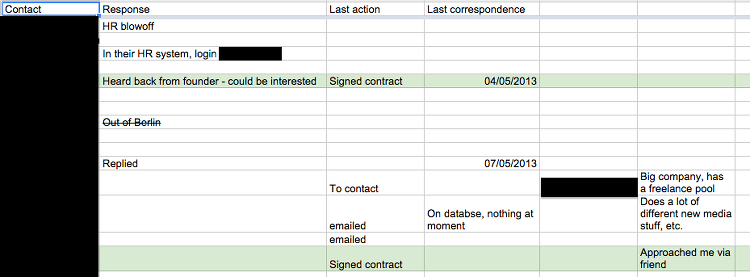
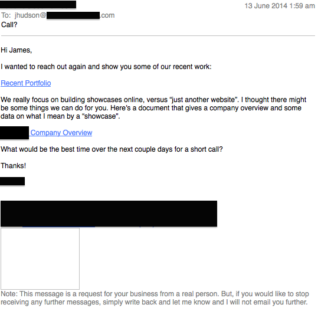

Sales is the most important skill for an entrepreneur, if not a person. If you can't independently find situations where you can do valuable work, you will always be served up a list of tasks by someone else, and pushed into situations where you have no power to negotiate better terms.
Sales is nothing more than finding and approaching people who need your help. This is my condensed manual for how to become a heavy-duty salesperson.
It is my manual - you have your own skills and your own personality, so your sales technique will be different. It's something you need to practise and evolve.
Before I started putting these ideas fully into practice, I was dependent on other people to find me work and tell me what to do. Now I can pick and choose how I spend my time.
Sales is NOT the old cliche of tricking people into buying stuff they don't need, or coaxing the maximum amount of money out of them. You might make one sale, but that will be your last. Business people aren't dumb; they have people trying to scam them every day. Bad reputations travel at the speed of light on the internet.
Your sales motivation should be a desire to help other people become happy and successful, any way you can. Every wretched human you meet is going to suffer and die eventually; the least we can do is look after each other during our short time together on this planet.
There are many ways to find people who need your help. I'll work through them in order of least to most effective, but also in level of sales skill required.
In over ten years I have never got any work from delegating my sales to an agency. I talked to some recruitment agencies about this, and they admitted that I was a better salesperson than they were. The work they find seems more boring, pays less, and is usually in the middle of nowhere. Most importantly, you can't set your own terms or write your own contracts, so you may as well be back in a day job. Maybe you'll have better results if you pick your recruiter contacts wisely, but for me it's been a waste of time.
You are number three in the pecking order: the recruiters are looking after themselves first, then the companies that pay them a huge commission for finding you. Finally, you get the scraps. Doing my own sales versus using an agency is like comparing dating to being pimped out by some guy in a tracksuit.
Craigslist is gold. Or at least it contains small gold nuggets which can be gleaned from the torrents of garbage. In amongst the ads for "tattooed women needed for artistic porn theatre project" and "I make you website $50", you will likely find some small projects. They are usually individuals or other small businesses or freelancers. They will have a tight budget, but are quick to say "yes". If you have nothing better to do, scan the Craigslist RSS feed. When I started from zero in Berlin, Craigslist not only gave me my first customers, but also a couple of my dearest collaborators, my first webjaying gig in Berlin, and a wonderful home.
When you are starting out, never rule anything out, and never say no to anything (except maybe the porn art projects). It's better to be doing sales work than sitting around doing nothing, and it's better to be making money than doing sales work. If you look into a terrible-sounding Craiglist post, you might discover a very competent and pleasant person who just doesn't have experience in your field.
You make a list of potential customers by searching the web, and work through them seeing if there's anything you can do for them. This takes some preparation, but it will probably get you bigger projects.
This is when your reputation, existing customers and friends, are doing your sales for you. You'll get this after a year or so if your business is successful. I haven't done any real sales for a year, other than friends and customers referring me to their contacts.
Your life and work are now intertwined, so you should always be partly on sales duty whenever you meet new people. Don't be a pain; just get out of the habit of mumbling something about "services industry" or "study" whenever someone asks you what you do. Why do people always make themselves sound so damn boring when they meet?
Try being enthusiastic about showing or telling people what you do. They'd probably rather play with a singing cat app than hear your job title and description (those singing cats have opened a surprising number of doors). Hopefully they'll remember you when their friends are asking about getting some work done.
You will always have people coming to you expecting free consulting. No matter how stressed or busy you are, take a deep breath and try to always share some reassurance and decent advice. I'm already juggling four people asking for advice in the last 24 hours, my phone buzzing at all times of day and night. But they have also thrown me a couple of exciting leads this week.
This is a joke; a customer recently found me by googling "software developer". That would have to be a one in a million chance.
However, a good, old-fashioned website is still a good place to have an online profile where you can direct people. Here's mine.
UPDATE 26/4/2019: not so much of a joke any more. My blog is getting a modest flow of traffic, which pushed my website up the google rankings, and so I do get occasional inquiries from web searches now.
This section applies to Craigslist and cold calling. Sales is like dating: you hope to end up in a mutually beneficial relationship with a stranger. Unless sales is your profession, you probably have a natural uncomfortableness with the idea of interacting with strangers. This fear is keeping 95% of your competition away. It separates those who get told what to do from those who make good things happen for themselves. You need to beat it, as it will be lethal to your business, or at least keep you in the patterns of employment: a freelancer in name only.
Open an account on Tinder or OK Cupid to practise: the more awkward and mismatched the dates you can set up, the better. Or, take up social dancing, where you will have many positive experiences with complete strangers.
You don't know anyone in town, and you want to find new business. Now you're ready to pick up the phone or start that introductory email. If you have nothing better to do and your business bank account is looking scrawny, set yourself a target of three new sales emails or phone calls per day.
Put as much time as you can spare into researching a target company. What are they doing that you might be able to help with? Do they have any jobs in their employment section which have been there for a while, which indicates they have a need to fill? Are they making a strategic move into your area of expertise?
Don't only target companies in your field: chances are they already have their established pool of contacts for what you do.
If you are contacting a company after doing thorough research, you are saying "I care about what you do, and I want to work with you to help you do even more good stuff". If you contact them knowing nothing about them and send a form letter, you are saying at best "I don't care at all who you are or what you do, I just want your money." At worst you are saying "this is a spam email that's going to install malware on your computer. If you ever see this person's name again, burn it."
Responding to calls for proposals is easier than cold calling: your potential customers are already crying out for your help. People only look for freelancers when they have no idea how to solve a problem using their existing expertise, have been burnt by bad people, or currently have too much to deal with. They will usually tell you exactly what their problem is, or be very quick to.
Don't mention hourly rates or cost yet, even if they ask. If someone says "I want you to paint my house, now tell me how much it'll cost and how long it'll take" they are either an idiot, or have little idea of what they are asking for. How big is the house? What if you're a champion painter and can paint a house in half the time of your competitors, or have patented a high-tech paint formula which only needs a single coat instead of three?
You will probably have competition from all the other bidders, but thanks to my previous post, you can now do the job cheaper and better than them, because you are a part-time superhuman. Combined with an excellent proposal (the subject of a future post), you should be the customer's first choice. If you aren't, ask them why. If you keep losing out, perhaps you could try and work together with your competitors, so you might pick up whatever skills they have.
Cold calling is contacting someone who doesn't know you and hasn't solicited contact from you. It's got the lowest payoff for the effort involved, but if you have no other leads you have no choice. You are also leaving yourself open to new opportunities.
Keep a "sales funnel" spreadsheet of all your leads, the contact person, and the date and nature of the last contact you had with them. Some leads might tell you to check back in a few months. Others might even read "I annoyed this person" - you keep them there too so you don't contact people twice by mistake. Some might have a proposal pending which you should check back on in a few weeks.
Here's an old one of mine:
The first email contact you stumble across on your target's website is probably an HR person. They are very charming and nice, but avoid them. They are a gatekeeper who is there to keep you away from the people who make the decisions. If you get an email that says "thank you... blah blah... we have put you on file and if any work comes up in the future" it means that an HR person just gave you the polite "go away". If you'd met this person in a bar, they would already be tearing up your phone number the minute you say goodbye.
Try and get a manager, or even a engineer within the company. They know what the company is actually doing. If they need any work done, they will find a way to sneak in a freelancer through the back door. You can often guess their email addresses from LinkedIn, i.e. first.last@companyname.com
A phone call makes an instant demand on someone's time and it's just creepy, so I find emails work better in the IT world. It might be different in your industry. Before making a cold call, do your research, or your message will be banished to the spam bin.
Here's a fairly representative email from my spam folder, showing what not to write:
Firstly, the subject. "Call?" Why would I take a call from a complete stranger? Only my mum is allowed to be that presumptuous about calling me.
Who on earth is this, and how did they get my email address? What the hell is a showcase, and why do I need one? Is this even from a real company? I'm too scared to follow the link, despite the cute footer which basically says: "we admit that this email is spammy and unprofessional. But we're going to send it anyway."
What "things" can they do for me? Take my money? Install malware on my computer?
"Call?" I'd rather taste-test the next thing I find on the footpath. Perhaps this is a great company, but sadly I'll never find out. Try looking at your actions and words from the recipient's point of view. They don't know you, and you are intruding on their valuable time.
Let me rewrite this:
Hi James,
Apologies for the unsolicited email, but I think we might be able to help you out with a few things on your website. I came across it via a google search and enjoyed reading about your projects. We actually do similar ones with HTML5 and jQuery, which you can check out at www.studiowhatever.com.
However, I noticed your website is a bit basic. I can see you know what you're doing, but the design could do with a bit of polish from a professional designer.
I'm sure a simple Content Management System would make writing all those blog entries easier. We could also put in an RSS feed and hopefully get you a few more page views. Most of our other customers have made their money back in a few months from the extra ad revenue.
If this sounds like something you could be interested in, let me know. Otherwise, please keep me in mind the next time you (or any of your friends) need your website improved. I'll do my best to help, or find someone else who can.
Thank you for your time.
Best Regards,
Ms Not-so-spammy
So: I showed that I cared enough about the business to research it and suggest some solutions to problems they might not be aware they even had.
I kept it informal, yet acknowedged that I was a) a stranger contacting them out of the blue, and b) using up their time, but in a way I hoped could benefit them.
I asked that they contact me if they have work in the future. That way I can become a "go to" person for their problems, even if they don't have any business for me at that moment.
So keep it informal. You are not begging for a job: your customers are your partners and equals. You are going to solve all their problems so they should be glad you are contacting them.
Don't bother busy people with your CV and life history. Give them a link to your website where they can skim some references from previous customers and interesting examples of the things you've completed in the past.
Nobody cares, apart from you: how long you've been in business, how satisfied your customers are, how you're the cheapest or the biggest or the best. They only want to hear these four words:
"I can help you".
LISTEN TO PEOPLE! Just shut up and don't talk about yourself. Really try to understand their problems. You are the dumb one here: they are experts in their industry and you know almost nothing about what they do yet. Ask questions to bring up the full intricacies of the situation. Chances are they'll say "wait, I nearly forgot! We'd actually need you to do this extra work, too!" This new relationship is all about their problems, not about how awesome you say you are.
Avoid those horrible buzzwords, such as: "best in class", "cutting edge", "in our DNA", and "mission critical". They translate to "this person can only regurgitate marketing slogans, and knows nothing about actually solving your problems. Please ignore them."
Be assertive, and always advance towards the goal of a sale. You aren't messing about; you want to stop talking, roll up your sleeves and start solving problems ASAP.
Don't settle for wishy-washy conclusions like "we'll have a meeting"; push for actions. It's OK to ask them for more material, information, or research of their own to show they are taking a stake in the solution. A future blog topic will be how to get a customer to write their own proposal.
Consider the customer's time commitment. What are they getting out of this email or call? Make it worth it for them. What are you getting out of it? Your time is equally valuable.
Social calls are not sales calls - don't mix them. Say up front that it's a sales call if that's what it is. You owe it to potential customers to give them proper, professional attention, and not waste their time unless they explicitly want to just hang and chill.
There are so many reasons to stick to this aphorism. A bad customer will waste your time, argue over trifles, and drag you down. Just walk away if you have a bad feeling about a deal, unless you really have no money and enough spare time and sanity to deal with the fallout.
This attitude says: "I'm only prepared work with good people who are serious about what they do". Without it, the good customers may see you as a soft touch, desperate, or rubbish.
To become a master salesperson, you need to go beyond making money, and beyond solving your customer's problems. You need to get a feeling for what really makes people tick. Apply the same logic you used for self-analysis in our previous blog post, to your potential customers.
Which primal monkey-drives are dragging them out of bed in the morning? Do they really want a bold new product design, or deep down do they just want their children to be proud of them?
If they seem really stressed and it's September, perhaps they are struggling with a project and have an annual review coming up in November. In this case, they don't just want something built. What they really want is for you to banish the recurrent nightmare which wakes them in a cold sweat every morning at 3am: the one where they are being humiliated at a big meeting in front of all their bosses.
With our imaginary non-spamming friend's email above, note that they are saying more than "we can make your website better". From his philosophical rant on his website, they have inferred that James is a humanist, and wants to project the facade of being a Renaissance man: the engineer with artistic sensibilities. By hinting that his website looks like something ugly cobbled together by a programmer, they are addressing one of his potential insecurities. They aren't just selling a website; they're selling an ego-fluffing.
Look for the personal motivations and emotional needs of the decision-makers in the company, and try to address them as much as the practical needs of the project. Ideally you should not just deliver a service, but also help your customers to sleep more easily at night.
Definitely practise these ideas wherever you are; whether within your own business, with existing customers, or within employment. Always try to listen and help.
Spend as much time as you can hanging around the sales team and working the trade show booths. The skills you pick up as part of a sales team will be invaluable knowledge for the rest of your life, whereas the latest technical skills you learn on the job could be obsolete in a year or two.
Try and cultivate relationships with people in other departments, and with your workplace's customers.
The world is full of people with problems: find them and help them! The world is full of unrealised possibilities which you could bring to fruition: find them and make them happen!
Please write to me with your thoughts and suggestions. I do like to hear your opinions and stories. And please click the social media buttons below if you found this useful, so the feed filter gods may smile upon me.
It's Monday morning, but I don't have to go to work. Ever again.
Become a Part-Time Superhuman: Work a 4-Hour-Day
Adequate is better than more: your life as the perfect kitchen
This is the Sales Manual you should have been given at graduation
I'll build you an app to help you start your own business. For free.Needless to say, this blog isn't financial or legal advice, an excuse for getting fired, or promising that any of these ideas will work for you. The companies or people I mention may not agree with my opinions here. Don't do anything reckless, damaging or hurtful to anyone! In the future you might need your bridges unburnt.